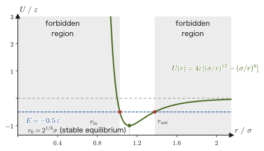
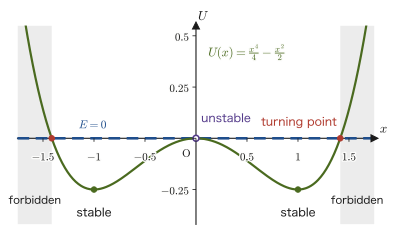

Chapter 4Work and Energy
When we drop an object from a height, it speeds up; when we compress a spring and release it, the weight shoots out; riding a bicycle up a slope is far more tiring than riding down it while braking—all of these experiences are connected by a single quantity, “energy.” In high school physics you will have learned work as $W=Fx$ (the product of the force and the distance moved, valid when the direction of the force and the direction of motion are the same), memorized the kinetic energy $\frac12mv^2$ and the potential energies $mgh,\ \frac12kx^2$ as formulas, and solved a variety of problems with the “conservation of mechanical energy.”
In this chapter we rederive these formulas to see where they come from, starting only from the inner product (dot product) of vectors and Newton's equation of motion. Work is defined as “the inner product of the force vector and the displacement vector,” and we confirm that everything up to the conservation of mechanical energy is connected by a single thread of logic. Along the way we also meet a situation that the formulas learned first cannot handle—the work done on an object moving along a curved path while subject to friction. There it should become clear why a new concept, the “conservative force,” is needed.
The content of this chapter is also the first occasion on which the ideas of vector analysis learned in Chapters 18–20 (scalar fields and vector fields; gradient, divergence, and curl; line integrals and path independence) of the companion volume “University Mathematics” (AD 02) are applied to a concrete physical phenomenon—work and potential energy.
- Starting from the high school formula $W=Fs\cos\theta$, the definition of work $W=\int_C\bm F\cdot\dd\bm r$ (positive, zero, and negative work; the unit $\mathrm J$), and the meaning of the inner product as the “magnitude of influence”
- Deriving the work–energy theorem $W=\frac12mv_2^2-\frac12mv_1^2$ from Newton's equation of motion
- How to calculate work that involves friction for motion along a curve, using tangent and normal vectors
- The definition of a conservative force, $\bm F_c=-\nabla U$, and its equivalence to the statement that $\rot\bm F=\bm0$ and the work is independent of the path
- Confirming that gravity, the spring force, and universal gravitation are conservative forces, and why the frictional force is not
- The conservation of mechanical energy, $U_1+K_1=U_2+K_2$, and the conditions under which it applies
- Power $P=\bm F\cdot\bm v$, and how to read off from the potential energy curve $U(x)$ whether a motion is possible, where the turning points are, and where the stable equilibria are
Source notes: Yasuhide Mochizuki, Physics Notes: Mechanics, pp. 9–12.
4.1 The Definition of Work — The Inner Product of Force and Displacement
In high school physics we learned work as “the magnitude of the force × the distance moved in the direction of the force.” In this section we generalize this definition in two steps: (1) the case where the direction of the force does not coincide with the direction of motion, and (2) the case where the force varies from place to place and the particle (point mass) moves along a curved path. Let us start with the simplest case, in which the force is constant and the particle moves in a straight line. On a frictionless horizontal surface, we keep applying a constant force $\bm F=[f_x,f_y]$ to an object of mass $m$ ($f_y$ points upward and is small enough that the object does not leave the floor), and suppose that the object moves straight along the $x$ axis from $x=x_1$ to $x=x_2$ (let $x$ be the position of the left end of the box) (Figure 4.1). The displacement vector of the object is $\Delta\bm r=[x_2-x_1,\,0]$ (its $y$ component is 0, because the object moves on a horizontal surface and its height does not change).
In high school physics, work was defined as the product of the distance moved and the component $f_x$ of the force in the direction of motion (the $x$ direction). In equation form, this is
\begin{equation} W=f_x(x_2-x_1) \label{eq:4-work-const} \end{equation}The component $f_y$ of the force in the vertical direction (as well as the normal force $N$ and gravity $mg$) has no effect at all on the displacement of the object, since the object moves only horizontally—these forces do no work in this motion.
Derivation: Eq. \eqref{eq:4-work-const} equals the inner product $\bm F\cdot\Delta\bm r$ of the force and the displacement
We compute the inner product of the force $\bm F=[f_x,f_y]$ and the displacement $\Delta\bm r=[x_2-x_1,\,0]$ as the sum of the componentwise products (the definition of the inner product, University Mathematics, Section 15.2).
$$ \bm F\cdot\Delta\bm r=[f_x,f_y]\cdot[x_2-x_1,\,0]=f_x(x_2-x_1)+f_y\cdot0=f_x(x_2-x_1) $$The right-hand side is exactly the same expression as $W$ in Eq. \eqref{eq:4-work-const}. Therefore, when the force is constant and the particle moves along a straight line, the relation
\begin{equation} W=\bm F\cdot\Delta\bm r \label{eq:4-work-fdotdr} \end{equation}holds.
∎
The inner product can also be written as $\bm F\cdot\Delta\bm r=\abs{\bm F}\abs{\Delta\bm r}\cos\theta$ ($\theta$ is the angle between $\bm F$ and $\Delta\bm r$), so if we write the distance moved as $s=\abs{\Delta\bm r}$ and the magnitude of the force as $F=\abs{\bm F}$, then Eq. \eqref{eq:4-work-fdotdr} is nothing other than the formula we learned in high school,
$$ W=Fs\cos\theta $$When $\theta=0^\circ$ (the force points in the same direction as the motion), $W=Fs$, which takes us back to the “force × distance” that we learned first.
Intuition: Work can be positive, zero, or negative
From the sign of $\cos\theta$, we see that the sign of the work is determined by the angle between the force and the displacement. If $\theta\lt90^\circ$ (the force pushes in the direction of motion), then $W\gt0$; if $\theta=90^\circ$ (the force is perpendicular to the direction of motion), then $W=0$; and if $\theta\gt90^\circ$ (the force acts as a brake on the motion), then $W\lt0$. For example, when we lift a load, the work that the hand does on the load is positive, but the work that gravity does on the load is negative (gravity points downward and the displacement upward, so $\theta=180^\circ$ and $W=-mgh$). We will use this “negative work” naturally in the following sections (the work of friction, the work of conservative forces), so let us get used to it here.
The unit of work is defined by taking the work done when a force of $1\ \mathrm N$ moves an object through $1\ \mathrm m$ to be $1\ \mathrm J$ (one joule), so that
$$ 1\ \mathrm J=1\ \mathrm{N\,m}=1\ \mathrm{kg\,m^2/s^2} $$holds.
Intuition: The inner product measures the “magnitude of influence”
What we learn from Eq. \eqref{eq:4-work-fdotdr} is that the work actually done by the force $\bm F$ receives contributions from only the component of the force in the same direction as the displacement $\Delta\bm r$. However large the force is, the component perpendicular to the displacement (in this example, $f_y$) contributes nothing at all to the work. This is a manifestation of the fact that the inner product $\bm a\cdot\bm b=\abs{\bm a}\abs{\bm b}\cos\theta$ ($\theta$ is the angle between the two vectors $\bm a,\bm b$) measures how much of $\bm a$ can be “projected” onto the direction of $\bm b$ (University Mathematics, Section 15.2). In general, it is good to understand the inner product $\bm a\cdot\bm b$ as a quantity expressing how much “influence” the vector $\bm a$ exerts along a certain direction (the direction of $\bm b$). In the case of work, that “influence” is how much the force acts in the direction in which the object actually moves.
So far the force has been constant and the path straight. In reality, however, the force may vary with position, as with the force of a spring, and the particle may move along a curved path. In that case, if we divide the trajectory into very short segments, then within each segment the force can be regarded as nearly constant and the path as nearly straight, so we can apply Eq. \eqref{eq:4-work-fdotdr} to each segment and add up all the results. This is the following definition.
Definition 4.1: Work
When a particle moves along a trajectory (path) $C$ while subject to a force $\bm F$, we define
\begin{equation} W=\int_C\bm F\cdot\dd\bm r \label{eq:4-work-def} \end{equation}to be the work $W\ [\mathrm{J}]$ done on the particle by the force $\bm F$. Here $\dd\bm r$ is the displacement vector of the particle as it advances by a very small amount along the trajectory $C$ (the infinitesimal displacement), and $\int_C(\cdot)\,\dd\bm r$ is a symbol representing the operation (the line integral) of “dividing the trajectory $C$ finely, computing (integrand)$\cdot\dd\bm r$ as an inner product in each segment, and adding all of them up.” When the force is constant and the trajectory is a straight line, this coincides with Eq. \eqref{eq:4-work-fdotdr} (the line integral of a constant vector equals the inner product of that vector with the total displacement). The rigorous definition of the line integral is treated in University Mathematics, Section 20.2.
Math Tool: How to compute a line integral
To compute a line integral, we express the trajectory in terms of a single variable and convert the integral into an ordinary definite integral of one variable. (a) Using the time $t$ as the variable: if the trajectory is written $\bm r(t)=[x(t),y(t)]$ ($t$ runs from $t_1$ to $t_2$), then $\dd\bm r=\dfrac{\dd\bm r}{\dd t}\dd t$, so that $W=\displaystyle\int_{t_1}^{t_2}\bm F\cdot\dfrac{\dd\bm r}{\dd t}\,\dd t$. (b) Using $x$ as the variable: if the trajectory is the curve $y=f(x)$, then $\dd\bm r=[\dd x,\ f'(x)\,\dd x]$, so that $W=\displaystyle\int_{x_1}^{x_2}\big(F_x+F_yf'(x)\big)\,\dd x$. In this chapter we actually use these in Section 4.3 (method (b)) and Section 4.4.3 (method (a)). For details, see University Mathematics, Section 20.2.
Intuition: The difference between the time integral (impulse) and the trajectory integral (work)
In Chapter 2 we saw that integrating a force $\bm F$ with respect to time gives the impulse $\int\bm F\,\dd t$, which equals the change in momentum $\Delta\bm p$. Even for the same operation of “integrating a force,” the physical quantity obtained is completely different depending on what we integrate over. Integrating with respect to the time $t$ gives the impulse $\int\bm F\,\dd t=\Delta\bm p$ (a vector quantity), in which what matters is how long the force kept acting. On the other hand, integrating along the length and direction of the trajectory that the particle actually traveled gives the work $W=\int_C\bm F\cdot\dd\bm r$ (a scalar quantity; since we take the inner product, it is not a vector), in which what matters is over what distance, and moreover in which direction, the force acted. For the same force, if we keep pressing on a particle for a long time while hardly moving it, the impulse is large but the work is almost 0; conversely, if we push it only lightly but the particle moves a great deal, the impulse is small but the work can be large—impulse and work are quantities that extract different pieces of information from the same force.
Example 4.1: Work done by a constant force
An object of mass $2.0\ \mathrm{kg}$ lies on a smooth horizontal floor. A force of $10\ \mathrm{N}$ directed $30^\circ$ above the horizontal is applied to it continuously, and the object is moved $3.0\ \mathrm{m}$ horizontally along the floor (the object does not leave the floor). (1) Find the work $W$ done by this force. (2) Find the magnitude $N$ of the normal force that the floor exerts on the object, and the work done by the normal force and by gravity. Take the gravitational acceleration to be $g=9.8\ \mathrm{m/s^2}$.
Solution. (1) The horizontal component of the force (the component in the direction of the displacement) is $f_x=10\cos30^\circ\ \mathrm{N}$. The vertical component $f_y=10\sin30^\circ\ \mathrm{N}$ does not contribute to the work, because the object moves only horizontally. By Eq. \eqref{eq:4-work-const},
$$ W=f_x(x_2-x_1)=(10\cos30^\circ\ \mathrm{N})\times(3.0\ \mathrm{m})=10\times\frac{\sqrt3}{2}\times3.0\ \mathrm{N\,m}\approx26\ \mathrm{J} $$($\mathrm{N\,m}=\mathrm{J}$. The mass of the object is not used in this calculation—the work is determined by the force and the displacement alone.)
(2) Since the object does not leave the floor and does not accelerate in the vertical direction, the vertical forces balance: $N+f_y=mg$. Therefore we have
$$ N=mg-f_y=2.0\times9.8-10\sin30^\circ=19.6-5.0=14.6\ \mathrm N $$(This is smaller than $mg=19.6\ \mathrm N$ by $5.0\ \mathrm N$; this is why $N$ in Figure 4.1 is shorter than $mg$.) Both the normal force and gravity are vertical forces, and the displacement $\Delta\bm r=[3.0\ \mathrm m,\,0]$ is horizontal, so both inner products are $0$:
$$ W_{N}=[0,N]\cdot[3.0,0]=0,\qquad W_{mg}=[0,-mg]\cdot[3.0,0]=0 $$In other words, the normal force and gravity do no work. (How much the kinetic energy of this object has increased will be investigated with the work–energy theorem in the next section.)
4.2 Work and Kinetic Energy — The Work–Energy Theorem
In the previous section we computed work in the simple case where an object moves along a straight line. Here, for the case where an object moves along a generally curved trajectory $C$, we examine how the work $W=\int_C\bm F\cdot\dd\bm r$ (Definition 4.1; here $\bm F$ is the resultant of the forces acting on the object) is related to the kinetic energy. The starting point is Newton's equation of motion (Chapter 2):
$$ m\ddot{\bm r}=\bm F $$As we saw in Chapter 3, the acceleration in general curvilinear motion can be decomposed, using the unit tangent vector $\bm e_t$ (the unit vector pointing in the direction of travel) and the unit principal normal vector $\bm e_n$ (the unit vector pointing in the direction in which the trajectory bends, $\bm e_t\perp\bm e_n$), as
$$ \ddot{\bm r}=\frac{\dd v}{\dd t}\bm e_t+\frac{v^2}{\rho}\bm e_n $$Here $v=\abs{\dot{\bm r}}$ is the speed and $\rho$ is the radius of curvature. Substituting this into the equation of motion, we obtain
$$ \bm F=m\ddot{\bm r}=m\frac{\dd v}{\dd t}\bm e_t+m\frac{v^2}{\rho}\bm e_n $$Let us substitute this into the definition of the work from the starting point $P_1$ (time $t_1$) to the end point $P_2$ (time $t_2$).
$$ W=\int_{P_1}^{P_2}\bm F\cdot\dd\bm r=\int_{P_1}^{P_2}\left(m\frac{\dd v}{\dd t}\bm e_t+m\frac{v^2}{\rho}\bm e_n\right)\cdot\dd\bm r $$Math Tool: Rewriting the infinitesimal displacement vector $\dd\bm r$ in the tangential direction
Because the particle moves along the trajectory $C$ (a curve), the displacement vector $\dd\bm r$ by which the particle advances in a very short time points in the direction of travel at that instant, that is, in the same direction as the unit tangent vector $\bm e_t$. Its magnitude is the infinitesimal distance actually traveled by the particle along the trajectory (the arc-length element). Denoting the distance traveled, measured along the trajectory, by $s$ (we use a separate letter because it is distinct from the distance $r=\abs{\bm r}$ from the origin) and its infinitesimal increment by $\dd s$, the following relation holds:
$$ \dd\bm r=\bm e_t\,\dd s $$(Since the rate of change of the distance traveled with time is the speed, $\dd s/\dd t=v$, that is, $\dd s=v\,\dd t$; this is exactly the relation we used in Chapter 3 when we defined the speed $v=\abs{\dot{\bm r}}$.) In what follows we use this relation $\dd\bm r=\bm e_t\,\dd s$.
Using the orthonormality of the unit vectors, $\bm e_t\cdot\bm e_t=1$ (the inner product of the same vector of magnitude 1 with itself) and $\bm e_t\cdot\bm e_n=0$ (the inner product of two mutually perpendicular vectors; University Mathematics, Section 15.2), and substituting $\dd\bm r=\bm e_t\,\dd s$, we obtain
$$ W=\int_{P_1}^{P_2}\left(m\frac{\dd v}{\dd t}\underbrace{\bm e_t\cdot\bm e_t}_{=1}+m\frac{v^2}{\rho}\underbrace{\bm e_n\cdot\bm e_t}_{=0}\right)\dd s=\int_{P_1}^{P_2}m\frac{\dd v}{\dd t}\,\dd s $$Note how cleanly the term in the normal direction has disappeared—this is the acceleration version of the fact, seen in Section 4.1, that “a component of force perpendicular to the displacement does not contribute to the work.” The effect of a force in the direction that bends the motion (the normal direction) does not appear in the work; only the effect of a force in the direction that changes the speed of the motion (the tangential direction) appears as work.
Derivation: The work–energy theorem
We compute the remaining integral $\displaystyle\int_{P_1}^{P_2}m\frac{\dd v}{\dd t}\,\dd s$. We change the integration variable from the distance traveled $s$ to the time $t$ (integration by substitution). Since $\dd s=v\,\dd t$, if $t_1$ is the time at which the particle passes $P_1$ and $t_2$ is the time at which it passes $P_2$, then
$$ \int_{P_1}^{P_2}m\frac{\dd v}{\dd t}\,\dd s=\int_{t_1}^{t_2}m\frac{\dd v}{\dd t}\,v\,\dd t=\int_{t_1}^{t_2}mv\frac{\dd v}{\dd t}\,\dd t $$Now, differentiating $\dfrac12mv^2$ with respect to time $t$, by the differentiation of a composite function (the same chain rule as in University Mathematics, Section 6.4), gives
$$ \frac{\dd}{\dd t}\left(\frac12mv^2\right)=\frac12m\cdot2v\,\frac{\dd v}{\dd t}=mv\frac{\dd v}{\dd t} $$This coincides exactly with the integrand. Therefore the integrand is itself the time derivative of $\dfrac12mv^2$, and the integral of a derivative becomes the difference between the values of the original function (the fundamental theorem of calculus, University Mathematics, Section 5.2):
$$ W=\int_{t_1}^{t_2}\frac{\dd}{\dd t}\left(\frac12mv^2\right)\dd t=\left[\frac12mv^2\right]_{t_1}^{t_2} $$Evaluating the definite integral, we obtain
\begin{equation} W=\frac12mv^2(t_2)-\frac12mv^2(t_1) \label{eq:4-workenergy} \end{equation}(The same result is obtained by the formal calculation that moves $\dd v$ and $\dd t$ around like fractions. With $\dd s\to v\,\dd t$ and $\dfrac{\dd v}{\dd t}\dd s=\dfrac{\dd s}{\dd t}\dd v=v\,\dd v$, one writes $\int mv\,\dd v=\dfrac12mv^2$; this is a shorthand version of the integration by substitution above.)
∎
Definition 4.2: Kinetic energy
For a particle of mass $m$ moving with speed $v$, the quantity
$$ K\equiv\frac12mv^2 $$is called the kinetic energy $K\ [\mathrm{J}]$ of the particle. It is the same thing as the formula $\frac12mv^2$ learned in high school physics.
Theorem 4.1: The work–energy theorem
Suppose the resultant force $\bm F$ acting on a particle does work $W$ while the particle moves from $P_1$ (where its speed is $v_1$) to $P_2$ (where its speed is $v_2$). Then
\begin{equation} W=K_2-K_1=\frac12mv_2^2-\frac12mv_1^2 \label{eq:4-workenergy-thm} \end{equation}In other words, the work done by the resultant force is equal to the change in kinetic energy. This is called the work–energy theorem.
Intuition: Scope of Theorem 4.1
Note that the $\bm F$ in Theorem 4.1 is the resultant of all the forces acting on the particle (since we started from the equation of motion $m\ddot{\bm r}=\bm F$ itself, $\bm F$ is necessarily the resultant). Therefore, when several forces such as the normal force, gravity, frictional force, and tension act on an object, to use Theorem 4.1 we must use the “total work,” the sum of the work done by each of the forces. Moreover, this theorem always holds, regardless of whether the forces are conservative—even if nonconservative forces such as friction (defined in Section 4.4) are mixed in, the relation between the work of the resultant force and the change in energy does not change. In the next section, we will confirm this with an example that includes friction.
Example 4.2: Computing a speed with the work–energy theorem
A cart of mass $5.0\ \mathrm{kg}$, initially at rest, has a total of $40\ \mathrm{J}$ of work done on it. Find the final speed $v$ of the cart.
Solution. Since the cart was initially at rest, $v_1=0$ and hence $K_1=0$. By the work–energy theorem (Eq. \eqref{eq:4-workenergy-thm}),
$$ W=K_2-K_1=\frac12mv^2-0 $$Substituting $W=40\ \mathrm{J}$ and $m=5.0\ \mathrm{kg}$, we obtain
$$ 40=\frac12\times5.0\times v^2 \quad\Longrightarrow\quad v^2=\frac{2\times40}{5.0}=16\ \mathrm{m^2/s^2} \quad\Longrightarrow\quad v=4.0\ \mathrm{m/s} $$(Dimension check: since $\mathrm{J/kg}=\mathrm{(kg\,m^2/s^2)/kg}=\mathrm{m^2/s^2}$, taking the square root gives $\mathrm{m/s}$, which is correct as a unit of speed.)
4.3 Work along a Curve — An Example with Friction
Let us apply the framework developed up to the previous section to the case of motion along an actually curved path while subject to a frictional force. For a particle moving along the plane curve $y=f(x)$, this is a typical example in which we write the tangent vector $\bm e_t$ and the normal vector $\bm e_n$ in concrete components and compute the work. What matters is to count the forces and to sort out which force acts in which direction.
Illustration 4.1: Work on a particle moving along the curve $y=\sin x$ under friction
Problem. A particle of mass $m$ lies on the curve $y=\sin x\ (0\le x\le\pi/2)$. Subject to friction with coefficient of kinetic friction $\mu$, it is pulled up slowly along the curve (always staying on the curve), from $x=0$ to $x=\pi/2$, while maintaining equilibrium. The forces acting on the particle are four: gravity $\bm F_1=[0,-mg]$; the normal force exerted by the curve (of magnitude $N$, directed outward from the curve, that is, in the direction of $-\bm e_n$; in this chapter $N$ is the magnitude of the normal force and is distinct from the torque $\bm N=\bm r\times\bm F$; in Chapter 10, where torque is used in earnest, we write the normal force as $F_N$ to avoid confusion); the kinetic friction $\bm F_2$; and the external force $\bm F$ that pulls the particle up. The external force $\bm F$ is applied in the direction along the curve (the tangential direction). How much work does this external force $\bm F$ do on the particle? Let $g$ be the gravitational acceleration.
Solution. We proceed while sorting out the forces as in Figure 4.2. First, the tangent vector of the curve $y=\sin x$, taken as the unit vector pointing in the direction of increasing $x$, is
$$ \bm e_t=\left[\frac{1}{\sqrt{1+\cos^2x}},\ \frac{\cos x}{\sqrt{1+\cos^2x}}\right] $$(As $x$ increases by $\dd x$ along the curve, $y$ changes by $\dd y=\dfrac{\dd(\sin x)}{\dd x}\dd x=\cos x\,\dd x$, so the direction of the displacement vector is proportional to $[1,\cos x]$. Dividing this by its magnitude so that it has magnitude 1 gives $\bm e_t$.) The unit principal normal vector, which is perpendicular to this and points, as in the definition of Chapter 3, to the side toward which the curve bends (the inner side of the curve, which is downward for this hump-shaped curve), is
$$ \bm e_n=\left[\frac{\cos x}{\sqrt{1+\cos^2x}},\ \frac{-1}{\sqrt{1+\cos^2x}}\right] $$(The orthogonality can be checked from $\bm e_t\cdot\bm e_n=\dfrac{\cos x-\cos x}{1+\cos^2x}=0$. The normal force acts outward from the curve, that is, in the direction of $-\bm e_n$.) Let $\theta$ ($0\le\theta\le\pi/4$) be the angle between the tangent $\bm e_t$ and the horizontal (the $x$ axis). Since the slope of the curve is $\cos x$, we have $\tan\theta=\cos x$, and using the trigonometric relation $1+\tan^2\theta=1/\cos^2\theta$, we find that
$$ \cos^2\theta=\frac{1}{1+\tan^2\theta}=\frac{1}{1+\cos^2x} $$holds.
Balance of forces. Because we move the particle slowly, the acceleration is almost 0 (in the Chapter 3 formula, both the $\dd v/\dd t$ term and the $v^2/\rho$ term can be neglected), and the sum of the four forces is $\bm 0$:
$$ \bm F_1-N\bm e_n+\bm F_2+\bm F=\bm 0 $$Since $\bm F_2$ and $\bm F$ are in the tangential direction (the direction of $\bm e_t$), taking the inner product of this equation with $\bm e_n$ gives $\bm F_1\cdot\bm e_n-N=0$ as the balance in the normal direction. The normal component of gravity $\bm F_1=[0,-mg]$ is $\bm F_1\cdot\bm e_n=mg/\sqrt{1+\cos^2x}$ (positive, that is, directed toward the inner side of the curve), so
$$ N=\bm F_1\cdot\bm e_n=\frac{mg}{\sqrt{1+\cos^2x}}=mg\cos\theta $$The kinetic friction has a magnitude proportional to the normal force (the law of kinetic friction) and a direction opposing the motion, that is, the direction of $-\bm e_t$, so
$$ \bm F_2=-\mu N\bm e_t=\mu mg\left[\frac{-1}{1+\cos^2x},\ \frac{-\cos x}{1+\cos^2x}\right] $$Next, we consider the balance in the tangential direction. Writing the external force as $\bm F=F_t\bm e_t$, the inner product with $\bm e_t$ gives $\bm F_1\cdot\bm e_t-\mu N+F_t=0$. The tangential component of gravity is $\bm F_1\cdot\bm e_t=-mg\cos x/\sqrt{1+\cos^2x}=-mg\sin\theta$ (where $\sin\theta=\tan\theta\cos\theta=\cos x/\sqrt{1+\cos^2x}$), so we obtain
$$ F_t=mg\sin\theta+\mu N=\frac{mg\cos x+\mu mg}{\sqrt{1+\cos^2x}} $$This is exactly the result of high school physics: “the force that pulls an object up a slope is the sum of the component of gravity along the slope and the frictional force.”
Computing the work. The infinitesimal displacement along the curve is $\dd\bm r=[\dd x,\ \dd y]=[\dd x,\ \cos x\,\dd x]$ (just the differential of $y=\sin x$), and its magnitude (the arc-length element) is $\dd s=\sqrt{1+\cos^2x}\,\dd x$. Since $\dd\bm r=\bm e_t\,\dd s$, the inner product with $\bm F=F_t\bm e_t$ is
$$ \bm F\cdot\dd\bm r=F_t\,\bm e_t\cdot\bm e_t\,\dd s=F_t\,\dd s=\frac{mg\cos x+\mu mg}{\sqrt{1+\cos^2x}}\cdot\sqrt{1+\cos^2x}\,\dd x=\big(mg\cos x+\mu mg\big)\,\dd x $$and the square root cancels cleanly. Therefore the work done by the external force is
$$ W=\int_0^{\pi/2}\big(mg\cos x+\mu mg\big)\,\dd x=\Big[mg\sin x\Big]_0^{\pi/2}+\Big[\mu mg\,x\Big]_0^{\pi/2} $$so that
\begin{equation} W=mg(\sin\tfrac{\pi}2-\sin0)+\mu mg\left(\tfrac{\pi}2-0\right)=mg+\mu mg\cdot\frac{\pi}{2} \label{eq:4-friction-example} \end{equation}is obtained.
An alternative calculation (without treating the normal force separately). Writing the external force as $\bm F'=-(\bm F_1+\bm F_2)$ and computing with it gives exactly the same result. Here $\bm F'$ is the force that cancels gravity and friction, and it differs from the actual external force $\bm F$ only in the normal component $-N\bm e_n$ ($\bm F=\bm F'+N\bm e_n$). The force $-N\bm e_n$ in the normal direction is perpendicular to $\dd\bm r$ and does no work, so $\bm F\cdot\dd\bm r=\bm F'\cdot\dd\bm r$. Written in components, $\bm F'=\Big[\dfrac{\mu mg}{1+\cos^2x},\ \ mg+\dfrac{\mu mg\cos x}{1+\cos^2x}\Big]$, so
$$ W=\int_0^{\pi/2}\bm F'\cdot\dd\bm r=\int_0^{\pi/2}\frac{\mu mg}{1+\cos^2x}\,\dd x+\int_0^{\pi/2}mg\cos x\,\dd x+\int_0^{\pi/2}\frac{\mu mg\cos^2x}{1+\cos^2x}\,\dd x $$Combining the first and third terms, we get $\dfrac{\mu mg}{1+\cos^2x}+\dfrac{\mu mg\cos^2x}{1+\cos^2x}=\mu mg\cdot\dfrac{1+\cos^2x}{1+\cos^2x}=\mu mg$ (the numerator and denominator coincide and cancel), which is a constant independent of $x$. Therefore $W=\int_0^{\pi/2}mg\cos x\,\dd x+\int_0^{\pi/2}\mu mg\,\dd x$, and we arrive at the same Eq. \eqref{eq:4-friction-example} as above.
Caution: Look at $\mu mg\cdot\dfrac{\pi}{2}$
In the result of Eq. \eqref{eq:4-friction-example}, $W=mg+\mu mg\cdot\dfrac{\pi}{2}$, the first term $mg$ is nothing other than the effect of gravity due to the particle's height rising from $0$ to $\sin(\pi/2)=1$ ($mg\times$ the change in height). The second term $\mu mg\cdot\dfrac{\pi}{2}$, on the other hand, is the extra work required because of friction, and $\pi/2$ is exactly equal to the distance the particle advanced in the horizontal direction (the change in $x$). In other words, this result decomposes into the neat form “work of the external force = the part against gravity (height × $mg$) + the part against friction (horizontal distance × $\mu mg$).” In the next Discussion, we check that this decomposition holds independently of the shape of the curve.
Check: The sum of the work done by the individual forces equals the change in kinetic energy (Theorem 4.1)
As stated in Section 4.2, the $W$ in Theorem 4.1 is the “work of the resultant force,” that is, the sum of the work done by all the forces. In Illustration 4.1, let us compute the work done by each force separately and add them up. In every case we integrate using $\dd\bm r=[\dd x,\cos x\,\dd x]=\bm e_t\,\dd s$ and $\dd s=\sqrt{1+\cos^2x}\,\dd x$.
- External force: $W_{\text{ext}}=mg+\mu mg\dfrac\pi2$ (Eq. \eqref{eq:4-friction-example}).
- Gravity: $W_{\text{grav}}=\displaystyle\int_0^{\pi/2}[0,-mg]\cdot[1,\cos x]\,\dd x=-mg\int_0^{\pi/2}\cos x\,\dd x=-mg$.
- Normal force: since $-N\bm e_n\perp\dd\bm r$, $W_N=0$.
- Kinetic friction: $W_{\text{fric}}=\displaystyle\int\bm F_2\cdot\dd\bm r=-\int_0^{\pi/2}\mu N\,\dd s=-\int_0^{\pi/2}\frac{\mu mg}{\sqrt{1+\cos^2x}}\sqrt{1+\cos^2x}\,\dd x=-\mu mg\frac\pi2$.
Adding the four gives $\big(mg+\mu mg\tfrac\pi2\big)+(-mg)+0+\big(-\mu mg\tfrac\pi2\big)=0$. Since we moved the particle slowly, the kinetic energy (almost) does not change, $K_2-K_1=0$, and this indeed agrees with Theorem 4.1. We have confirmed that Theorem 4.1 holds even when a nonconservative force, friction (defined in Section 4.4), is mixed in. The “extra” work done by the external force has been distributed between the increase $mg$ in the gravitational potential energy and the amount $\mu mg\dfrac\pi2$ that is lost to friction (turned into heat).
∎
Discussion: Why is the negative work done by friction determined by the horizontal distance alone?
If we carry out the calculation of Illustration 4.1 for a general curve $y=f(x)$ ($0\le x\le X$, where $f$ is differentiable and the particle always moves in the direction of increasing $x$), the same structure appears. The tangent vector is $\bm e_t=[1,f'(x)]/\sqrt{1+f'(x)^2}$, and if the particle is pulled up slowly by an external force applied in the tangential direction, the magnitude of the normal force is $N=mg/\sqrt{1+f'(x)^2}$ (the same calculation as in Illustration 4.1), and the arc-length element is $\dd s=\sqrt{1+f'(x)^2}\,\dd x$. Since the frictional force has magnitude $\mu N$ and its direction is always opposite to the motion, the work done by friction is given by
$$ W_{\text{friction}}=\int_C\bm F_2\cdot\dd\bm r=-\int_C\mu N\,\dd s=-\int_0^X\mu\cdot\frac{mg}{\sqrt{1+f'(x)^2}}\cdot\sqrt{1+f'(x)^2}\,\dd x=-\mu mg\int_0^X\dd x=-\mu mg\,X $$Because the shape of the curve (its slope $f'(x)$) cancels out cleanly inside the integral and disappears, the work done by friction does not depend at all on the height or the bending of the curve along the way; it is determined only by the horizontal distance $X$ that the particle advances. In other words, if the horizontal distance from the starting point to the destination is the same $a$, then no matter how high (or low) the route in between rises—for example, even for a route over a hill of height $b$ and a different route over a hill of height $c$ ($\neq b$) (Figure 4.3)—the negative work done by friction is the same, $-\mu mga$, in both cases.
On the other hand, the work done by gravity, $W_{\text{gravity}}=\int_C\bm F_1\cdot\dd\bm r=\int_0^X(-mg)f'(x)\,\dd x=-mg\big[f(X)-f(0)\big]$, is also independent of the shape of the path in between and is determined only by the difference in height between the starting point and the end point. Thus gravity and friction have in common that their work “does not depend on the detailed shape of the path in between,” but there is a difference: for gravity the work is determined by the starting point and the end point alone, whereas for friction it is determined by the horizontal distance the particle actually traveled (this is $X$ for a path along which $x$ only increases; if $x$ repeatedly increases and decreases along the way, it is the quantity $\int\abs{\dd x}$, which grows accordingly). In the next section we define a force with the former property (determined by the two end points alone, regardless of the path) as a “conservative force,” and check why friction does not belong to that family.
Example 4.3: Work done in pulling a load up a slope at constant speed
A load of mass $3.0\ \mathrm{kg}$ is pulled slowly up a straight slope with coefficient of kinetic friction $\mu=0.25$ (angle of inclination $30^\circ$, horizontal distance $4.0\ \mathrm{m}$) by a force parallel to the slope, while the load is kept in equilibrium (that is, at constant speed). Taking the gravitational acceleration to be $g=9.8\ \mathrm{m/s^2}$, find the work $W$ done by the pulling force.
Solution. The straight slope is the special case of the curve $y=f(x)=x\tan30^\circ$ ($0\le x\le4.0\ \mathrm m$), so the general result confirmed in the “Discussion” can be used as it is. The horizontal distance is $X=4.0\ \mathrm m$, and the change in height is $\Delta y=X\tan30^\circ=4.0\times\dfrac{1}{\sqrt3}\approx2.309\ \mathrm m$. Therefore,
$$ W=mg\,\Delta y+\mu mg\,X=mg\left(X\tan30^\circ+\mu X\right)=mgX\left(\tan30^\circ+\mu\right) $$Substituting the numerical values gives
$$ W=3.0\times9.8\times4.0\times\left(\frac{1}{\sqrt3}+0.25\right)\approx117.6\times(0.5774+0.25)\approx117.6\times0.8274\approx97\ \mathrm{J} $$(For a straight slope of constant inclination, we can confirm that the general formula $W=mg\,\Delta y+\mu mg\,X$ of the “Discussion” is exactly the formula learned in high school physics, “the work of pulling a load up a slope = the work against gravity + the work against friction.”)
4.4 Conservative Forces and Potential Energy
As we saw in the Discussion in Section 4.3, the work done by gravity does not depend on what path the particle takes and is determined only by the heights of the starting point and the end point. On the other hand, the work done by friction is determined by the horizontal distance the particle actually traveled (which grows if $x$ repeatedly increases and decreases) and is not determined by the starting point and the end point alone. This difference is very important, so let us give a name to forces having the former property and define them formally.
4.4.1 Definition of a conservative force and potential energy
Definition 4.3: Conservative forces and potential energy
When each component $F_x,F_y,F_z$ of a force $\bm F_c=[F_x,F_y,F_z]$ is expressed as a function of the particle's position $(x,y,z)$ alone (independent of time and velocity), and moreover the force can be written, using some scalar function $U(x,y,z)$, as
\begin{equation} \bm F_c=-\nabla U,\qquad\text{that is}\qquad F_x=-\pdiff{U}{x},\quad F_y=-\pdiff{U}{y},\quad F_z=-\pdiff{U}{z} \label{eq:4-conservative-def} \end{equation}we call $\bm F_c$ a conservative force and call $U(x,y,z)$ the potential of that conservative force, or its potential energy.
The symbol $\nabla$ (nabla, or del) that appears here denotes an operation called the gradient (read “grad”): from a scalar function $U(x,y,z)$ it produces the vector field $\nabla U=\left[\pdiff Ux,\pdiff Uy,\pdiff Uz\right]$ (the gradient vector) whose components are the three partial derivatives $\pdiff Ux,\pdiff Uy,\pdiff Uz$ (University Mathematics, Section 6.2; for example, differentiating $U$ with respect to $x$ alone, regarding the variables other than $x$ as constants). The definition of the gradient vector and its geometric meaning—that it “points in the direction in which $U$ increases most rapidly, and its magnitude expresses how steep the increase is”—are studied in detail in University Mathematics, Sections 18.4–18.6. The minus sign on the right-hand side of Eq. \eqref{eq:4-conservative-def} means that “a conservative force acts in the direction in which the potential $U$ decreases (the direction of steepest descent)”—much like a ball rolling down a slope, which is pushed toward the lower side.
Let us get used to computing $\nabla U$ with concrete examples. Take the $y$ axis vertically upward and let $U=mgy$. Then $\pdiff Ux=0,\ \pdiff Uy=mg,\ \pdiff Uz=0$, so $\nabla U=[0,\,mg,\,0]$ and the force is $\bm F=-\nabla U=[0,\,-mg,\,0]$, which agrees with gravity in high school physics (downward, of magnitude $mg$). Also, if $U=\dfrac12k(x^2+y^2+z^2)$, then $\nabla U=[kx,\,ky,\,kz]$, so $\bm F=-\nabla U=[-kx,\,-ky,\,-kz]=-k\bm r$, which is the restoring force of a spring acting toward the origin. If we regard $U$ as the “height of the terrain,” then $-\nabla U$ is “a force that acts in the direction of the steepest downhill slope of the terrain, with a magnitude proportional to how steep the slope is” (Figure 4.4).
Intuition: Why define a conservative force as the gradient of a potential?
At first glance, the definition $\bm F_c=-\nabla U$ may look as if it were imposed out of nowhere. Why do we bother to define a force in such a roundabout form? The answer is that, if we define it in this form, the work automatically becomes independent of the path and is determined only by the starting point and the end point. Let us compute the work done by a conservative force $\bm F_c$.
Derivation: The work done by a conservative force is independent of the path
The work done by a conservative force $\bm F_c=[F_x,F_y,F_z]$ while it moves a particle from a point $P_1$ to a point $P_2$ is, by Definition 4.1,
$$ W_c=\int_{P_1}^{P_2}\bm F_c\cdot\dd\bm r=\int_{P_1}^{P_2}\left(F_x\,\dd x+F_y\,\dd y+F_z\,\dd z\right) $$(we expanded the inner product in components and set $\dd\bm r=[\dd x,\dd y,\dd z]$). Here, if $U(x,y,z)$ is totally differentiable (University Mathematics, Section 6.3), the change in $U$ can be written as
$$ \dd U=\pdiff Ux\,\dd x+\pdiff Uy\,\dd y+\pdiff Uz\,\dd z $$This is the total differential: it expresses the change in $U$ when it moves slightly as the sum of the products of the partial derivative in each direction and the displacement in each direction. Substituting Eq. \eqref{eq:4-conservative-def} ($F_x=-\pdiff Ux$, and so on) into the expression for the work above, we obtain
$$ W_c=\int_{P_1}^{P_2}\left(-\pdiff Ux\,\dd x-\pdiff Uy\,\dd y-\pdiff Uz\,\dd z\right)=-\int_{P_1}^{P_2}\left(\pdiff Ux\,\dd x+\pdiff Uy\,\dd y+\pdiff Uz\,\dd z\right)=-\int_{P_1}^{P_2}\dd U $$The last integral is the sum of the changes $\dd U$ in $U$ along the path, so it does not depend on the path in between and is simply the value of $U$ at the end point minus its value at the starting point (the same idea as the property of the definite integral in University Mathematics, Section 5.2):
\begin{equation} W_c=-\big[U(P_2)-U(P_1)\big]=U(P_1)-U(P_2) \label{eq:4-conservative-work} \end{equation}∎
Looking at Eq. \eqref{eq:4-conservative-work}, we see that whatever the shape of the path $C$ in between, the work $W_c$ is completely determined by the difference between the potential value $U(P_1)$ at the starting point $P_1$ and the potential value $U(P_2)$ at the end point $P_2$—this is the reason for the property that “the work of a conservative force does not depend on the path,” and also the reason we deliberately chose the form $\bm F_c=-\nabla U$.
For example, going from point $A$ to point $B$ in Figure 4.5, the work done by a conservative force is the same, $U(A)-U(B)$, whether the particle takes the blue straight route or the purple semicircular route. In particular, for a closed path that returns to the starting point ($P_2=P_1$), $U(P_1)-U(P_2)=0$, so the work done by a conservative force satisfies
\begin{equation} \oint\bm F_c\cdot\dd\bm r=0 \label{eq:4-closed-loop} \end{equation}(the symbol $\oint$ denotes a line integral taken once around a closed path; University Mathematics, Section 20.3). Conversely, a force for which the work around some closed path is not zero is not a conservative force.
4.4.2 Equivalent condition for a force to be conservative — $\rot\bm F=\bm0$
When a force $\bm F=[F_x,F_y,F_z]$ is given, there is a convenient condition for deciding whether it is a conservative force—that is, whether a $U$ with $\bm F=-\nabla U$ exists—without actually searching for $U$. To state it, we first introduce the operation called the curl (read “rot”). $\rot\bm F$ is an operation that creates a new vector field from the vector field $\bm F$, and in components it is written as
$$ \rot\bm F=\left[\pdiff{F_z}{y}-\pdiff{F_y}{z},\ \ \pdiff{F_x}{z}-\pdiff{F_z}{x},\ \ \pdiff{F_y}{x}-\pdiff{F_x}{y}\right] $$(replacing the letters successively as $x\to y\to z\to x$ gives the three components in turn). For example, the third component $\pdiff{F_y}{x}-\pdiff{F_x}{y}$ is the difference between how the $y$ component of the force changes in the $x$ direction and how the $x$ component of the force changes in the $y$ direction, and it expresses the degree to which the force field “swirls” in the $xy$ plane. In a swirling field, the work done around one loop along the force is not zero (we actually compute this in Example 4.7 of Section 4.4.4). The definition of the curl and its meaning—how much a vector field swirls around a point—are studied in detail in University Mathematics, Sections 19.4–19.5.
Theorem 4.2: Equivalent condition for a force to be conservative
A necessary and sufficient condition for a force $\bm F=[F_x,F_y,F_z]$ (each component continuously differentiable in $x,y,z$, that is, differentiable once with a continuous derivative) to be conservative (that is, to be written as $\bm F=-\nabla U$ with some scalar function $U$) is that
\begin{equation} \rot\bm F=\bm 0 \label{eq:4-rot-condition} \end{equation}holds. However, this necessity and sufficiency holds when the region under consideration has no “holes” (every closed path can be continuously shrunk to a point)—it always holds in the whole space considered in this chapter and in any simply connected region within it.
Proof: Necessity (if the force is conservative, then $\rot\bm F=\bm0$)
Let $\bm F=-\nabla U$ (where $U$ is twice continuously differentiable). Since $F_y=-\pdiff Uy,\ F_x=-\pdiff Ux$, the third component of $\rot\bm F$ is
$$ \pdiff{F_y}{x}-\pdiff{F_x}{y}=-\frac{\partial^2U}{\partial x\,\partial y}+\frac{\partial^2U}{\partial y\,\partial x} $$The order of partial differentiation may be interchanged (Schwarz's theorem, University Mathematics, Section 6.3), so the right-hand side is $0$. The first and second components are likewise $0$ by the same calculation with $x,y,z$ interchanged. Hence $\rot\bm F=\bm0$. That is, $\rot(\nabla U)=\bm0$ is an identity.
∎
The converse, “sufficiency” (if $\rot\bm F=\bm0$, then the force is conservative), is shown by constructing $U$ from a line integral that is independent of the path. The proof uses Stokes's theorem (University Mathematics, Section 20.5) and the fact that the line integral of a gradient is independent of the path (University Mathematics, Section 20.3). A general derivation of $\rot(\nabla U)=\bm0$ is given in University Mathematics, Section 19.5.
4.4.3 Central forces are conservative — gravity, springs, and universal gravitation
Using Theorem 4.2, let us verify that three representative forces—uniform gravity, the elastic force of a spring, and universal gravitation—are indeed conservative, and find the potential energy of each.
Example 4.4: Confirming that uniform gravity is a conservative force
In the $xy$ plane, take the $y$ axis pointing vertically upward. For the uniform gravitational force $\bm F=[0,-mg,0]$ ($m,g$ are constants), (1) show that $\rot\bm F=\bm0$, and (2) find the potential energy $U(x,y,z)$.
Solution. (1) Since $F_x=0,\ F_y=-mg,\ F_z=0$ are all constants (independent of $x,y,z$), all the partial derivatives vanish: $\pdiff{F_z}{y}=\pdiff{F_y}{z}=\pdiff{F_x}{z}=\pdiff{F_z}{x}=\pdiff{F_y}{x}=\pdiff{F_x}{y}=0$. Therefore $\rot\bm F=[0,0,0]=\bm0$, and by Theorem 4.2, $\bm F$ is a conservative force.
(2) From $F_x=-\pdiff Ux=0,\ F_z=-\pdiff Uz=0$, $U$ does not depend on $x,z$. From $F_y=-\pdiff Uy=-mg$ we have $\pdiff Uy=mg$, so integrating with respect to $y$ gives $U=mgy+(\text{constant})$. Taking the constant to be 0, we obtain
$$ U(x,y,z)=mgy $$(this is exactly the $U=mgh$ of high school physics; $h$ is the height above the reference point, and here the $y$ coordinate itself gives the height).
Theorem 4.3: Central forces are conservative
A force that can be written, using a function $f(r)$ of the distance $r=\abs{\bm r}=\sqrt{x^2+y^2+z^2}$ from the origin alone, as
$$ \bm F=f(r)\,\bm e_r,\qquad \bm e_r\equiv\frac{\bm r}{r} $$(such a force is called a central force: a force whose magnitude is determined only by the distance from the origin and whose direction always lies on a line through the origin) is always a conservative force, regardless of the form of $f(r)$. Here $f(r)$ is assumed to be continuously differentiable for $r\gt0$. When the force diverges at the origin, as with universal gravitation, we consider the space with the origin removed (in three dimensions, even with the origin removed, any closed path in space can be shrunk to a point without catching on the hole, so the condition of Theorem 4.2 is satisfied).
Derivation: The curl of a central force is zero
Since $\bm e_r=[x/r,y/r,z/r]$, the components of a central force are given by $\bm F=f(r)\bm e_r=\left[f(r)\dfrac{x}{r},\ f(r)\dfrac{y}{r},\ f(r)\dfrac{z}{r}\right]$. Let us compute the $z$ component $\pdiff{F_y}{x}-\pdiff{F_x}{y}$ of $\rot\bm F$. Differentiating $r=\sqrt{x^2+y^2+z^2}$ partially with respect to $x$, by the rule for differentiating a composite function (University Mathematics, Section 6.4) we obtain $\pdiff rx=\dfrac{x}{r}$ (when differentiating with respect to $y,z$, we likewise have $\pdiff ry=y/r,\ \pdiff rz=z/r$). Using this,
$$ \pdiff{F_y}{x}=\pdiff{}{x}\!\left[\frac{f(r)}{r}\,y\right]=y\cdot\pdiff{}{x}\!\left[\frac{f(r)}{r}\right]=y\cdot\left(\frac{f'(r)}{r}-\frac{f(r)}{r^2}\right)\pdiff rx=\frac{xy}{r}\left(\frac{f'(r)}{r}-\frac{f(r)}{r^2}\right) $$(we carried out the differentiation of a composite function in two stages: we differentiated $\dfrac{f(r)}{r}$ with respect to $r$, and then $r$ with respect to $x$). Carrying out exactly the same calculation for $F_x=f(r)x/r$, this time differentiating partially with respect to $y$, we obtain
$$ \pdiff{F_x}{y}=x\cdot\pdiff{}{y}\!\left[\frac{f(r)}{r}\right]=x\cdot\left(\frac{f'(r)}{r}-\frac{f(r)}{r^2}\right)\pdiff ry=\frac{xy}{r}\left(\frac{f'(r)}{r}-\frac{f(r)}{r^2}\right) $$which is exactly the same expression as $\pdiff{F_y}{x}$. Therefore $\pdiff{F_y}{x}-\pdiff{F_x}{y}=0$. The calculation for the remaining two components of $\rot\bm F$ is the same. Indeed, setting $g(r)=f(r)/r$, the $i$th component of $\bm F$ can be written $F_i=g(r)\,x_i$ ($x_i$ is any one of $x,y,z$), and for $i\neq j$ we have $\pdiff{F_j}{x_i}=x_j\,g'(r)\pdiff r{x_i}=g'(r)\dfrac{x_ix_j}{r}$. This is unchanged when $i$ and $j$ are interchanged (it is symmetric). Since each component of $\rot\bm F$ has the form $\pdiff{F_j}{x_i}-\pdiff{F_i}{x_j}$, all three components are $0$. Hence $\rot\bm F=\bm0$.
∎
Derivation: The potential energy of a central force
The potential $U$ of a central force $\bm F=f(r)\bm e_r$ should also be a function $U(r)$ of the distance $r$ from the origin alone (since the direction and magnitude of the force are determined only by the distance from the origin, it is natural to expect that the potential likewise depends only on the distance and not on the direction in space). Differentiating $U(r)$ partially with respect to $x$, and using the rule for differentiating a composite function together with $\pdiff rx=x/r$, we obtain
$$ \pdiff{U}{x}=U'(r)\pdiff rx=U'(r)\frac{x}{r} $$and the same holds for $y,z$, so altogether we have
$$ \nabla U=U'(r)\left[\frac xr,\frac yr,\frac zr\right]=U'(r)\,\bm e_r $$For this to equal $\bm F=-\nabla U=f(r)\bm e_r$, it suffices that $U'(r)=-f(r)$. Therefore,
\begin{equation} U(r)=-\int f(r)\,\dd r \label{eq:4-central-potential} \end{equation}(an indefinite integral; the constant of integration determines where the reference point of the potential is taken, and physically it can be chosen freely.)
∎
Example 4.5: Potential energy of the spring force and of universal gravitation
(1) For the restoring force $\bm F=-k\bm r$ of a three-dimensional spring with the origin at the natural-length position ($k>0$, $\bm r$ is the position vector of the weight), confirm that it is a central force and find the potential energy $U(r)$. (2) When a particle of mass $M$ is at the origin, find the potential energy $U(r)$ of the universal gravitation $\bm F=-\dfrac{GMm}{r^2}\bm e_r$ ($G$ is the gravitational constant) acting on a particle of mass $m$, such that $U\to0$ as $r\to\infty$.
Solution. (1) In components, $\bm F=-k\bm r=[-kx,\,-ky,\,-kz]$. Computing the three components of the curl,
$$ \pdiff{F_z}{y}-\pdiff{F_y}{z}=0-0=0,\qquad \pdiff{F_x}{z}-\pdiff{F_z}{x}=0-0=0,\qquad \pdiff{F_y}{x}-\pdiff{F_x}{y}=0-0=0 $$(for example, $F_y=-ky$ does not depend on $x,z$, so its partial derivative with respect to $x$ or $z$ is $0$). Hence $\rot\bm F=\bm0$, and the spring force is a conservative force. Also, since $\bm F=-k\bm r=-kr\,\bm e_r$, it is a central force with $f(r)=-kr$. By Eq. \eqref{eq:4-central-potential},
$$ U(r)=-\int(-kr)\,\dd r=\int kr\,\dd r=\frac12kr^2+(\text{constant}) $$Taking the constant to be 0, we get $U(r)=\dfrac12kr^2$. In the $1$-dimensional case (a spring along the $x$ axis only), $r=\abs x$, so $U(x)=\dfrac12kx^2$, which agrees with the formula for the potential energy of a spring learned in high school physics.
(2) Since $\bm F=-\dfrac{GMm}{r^2}\bm e_r$, this is a central force with $f(r)=-\dfrac{GMm}{r^2}$, and by Theorem 4.3 it is a conservative force. By Eq. \eqref{eq:4-central-potential},
$$ U(r)=-\int\left(-\frac{GMm}{r^2}\right)\dd r=\int\frac{GMm}{r^2}\,\dd r=-\frac{GMm}{r}+(\text{constant}) $$($\displaystyle\int r^{-2}\,\dd r=-r^{-1}+(\text{constant})$ is a basic formula from University Mathematics, Section 5.1). Taking the constant to be 0 so that $U\to0$ as $r\to\infty$, we obtain
$$ U(r)=-\frac{GMm}{r} $$(choosing infinity as the reference point of the potential energy is the standard choice in celestial mechanics. $U(r)\lt0$ expresses that the two particles are bound together by the attractive force; that is, separating them requires positive work to be done from outside).
(3) Relation to the $mgh$ of high school physics. Let the mass of the Earth be $M$, its radius $R$, and the height above the surface $h$ ($h\ll R$). The difference in potential energy between the surface $r=R$ and the point at height $h$, $r=R+h$, is
$$ U(R+h)-U(R)=-\frac{GMm}{R+h}+\frac{GMm}{R}=\frac{GMm\,h}{R(R+h)}\approx\frac{GM}{R^2}\,mh $$(we used $R+h\approx R$ because $h\ll R$). Setting $g=GM/R^2\approx9.8\ \mathrm{m/s^2}$ (the gravitational acceleration at the surface), this equals $mgh$. In other words, the $U=mgh$ learned in high school was an approximation, valid near the Earth's surface, to the potential $-GMm/r$ of universal gravitation.
Check: The work of uniform gravity is independent of the path (comparing two paths)
Rather than relying only on the criterion of Theorem 4.2, let us actually compute the line integral along two different paths and directly verify that they give the same value. Under the uniform gravitational force $\bm F=[0,-mg]$ (considered in two dimensions in the $xy$ plane), we compute the work done when a particle moves from the point $A=(0,0)$ to the point $B=(3,2)\ [\mathrm m]$ along two paths: (i) the path going straight from $A$ to $B$, and (ii) the path that first goes horizontally to $(3,0)$ and then vertically from there to $(3,2)$ (an L-shaped path).
(i) Straight path. Parametrizing the path as $\bm r(t)=[3t,2t]$ ($t:0\to1$), we have $\dd\bm r=[3,2]\,\dd t$.
$$ W_{(\mathrm i)}=\int_0^1[0,-mg]\cdot[3,2]\,\dd t=\int_0^1(-2mg)\,\dd t=-2mg $$(ii) L-shaped path. First from $(0,0)$ to $(3,0)$ (horizontal direction, $\dd\bm r=[\dd x,0]$): $\bm F\cdot\dd\bm r=0\cdot\dd x+(-mg)\cdot0=0$, so the work on this segment is 0. Next from $(3,0)$ to $(3,2)$ (vertical direction, $\dd\bm r=[0,\dd y]$):
$$ \int_0^2[0,-mg]\cdot[0,\dd y]=\int_0^2(-mg)\,\dd y=-2mg $$Therefore $W_{(\mathrm{ii})}=0+(-2mg)=-2mg$.
The work along the two paths agrees, both being $-2mg$. Moreover, this value also agrees with $U(A)-U(B)=mg\times0-mg\times2=-2mg$ (using $U=mgy$ from Example 4.4). That the work is the same even though the shapes of the paths (a straight line and an L shape) are entirely different is the concrete meaning of the statement that “the work done by a conservative force is independent of the path.”
∎
Check: The work of the spring force and of universal gravitation is also independent of the path
Spring force. For $\bm F=[-kx,-ky]$ (in the $xy$ plane), we compute the work from the origin $A=(0,0)$ to the point $B=(a,b)$ along (i) the straight line $\bm r(t)=[at,bt]$ ($t:0\to1$, $\dd\bm r=[a,b]\,\dd t$), and (ii) the L-shaped path that first goes in the $x$ direction to $(a,0)$ and then in the $y$ direction to $(a,b)$.
$$ W_{(\mathrm i)}=\int_0^1[-kat,\,-kbt]\cdot[a,\,b]\,\dd t=-k(a^2+b^2)\int_0^1t\,\dd t=-\frac12k(a^2+b^2) $$ $$ W_{(\mathrm{ii})}=\int_0^a(-kx)\,\dd x+\int_0^b(-ky)\,\dd y=-\frac12ka^2-\frac12kb^2 $$Both equal $-\dfrac12k(a^2+b^2)$, which agrees with $U(A)-U(B)=0-\dfrac12k(a^2+b^2)$.
Universal gravitation. For the force $\bm F=-\dfrac{GMm}{r^2}\bm e_r$ that a particle of mass $M$ at the origin exerts on a particle of mass $m$, consider moving the latter from the point $P_1$ (at distance $r_1$ from the origin, on the $x$ axis) to the point $P_2$ (at distance $r_2\gt r_1$ from the origin, in the direction rotated by the angle $\varphi$ from the $x$ axis). Path (i): first go around the circle of radius $r_1$ through the angle $\varphi$, and then proceed in the radial direction from $r_1$ to $r_2$. Path (ii): first proceed along the $x$ axis in the radial direction from $r_1$ to $r_2$, and then go around the circle of radius $r_2$ through the angle $\varphi$. In motion along a circle, $\dd\bm r$ is tangent to the circle while the force is radial (directed toward the center), so they are perpendicular to each other and $\bm F\cdot\dd\bm r=0$ (zero work). In radial motion, $\dd\bm r=\bm e_r\,\dd r$, and
$$ \int_{r_1}^{r_2}\left(-\frac{GMm}{r^2}\right)\dd r=\left[\frac{GMm}{r}\right]_{r_1}^{r_2}=GMm\left(\frac1{r_2}-\frac1{r_1}\right) $$Along either path (i) or (ii), the work is 0 on the circular part and this value on the radial part, so the total is the same, $GMm\left(\dfrac1{r_2}-\dfrac1{r_1}\right)$. This agrees with $U(P_1)-U(P_2)=-\dfrac{GMm}{r_1}+\dfrac{GMm}{r_2}$ (moving the particle outward works against the attractive force, so the work is negative).
∎
4.4.4 Examples of nonconservative forces — the frictional force, and forces that depend only on position but are not conservative
In Section 4.3 we saw that the work done by the frictional force is determined by the horizontal distance the particle actually traveled. Since the work done by a conservative force is independent of the path and is determined only by the starting point and the end point (Eq. \eqref{eq:4-conservative-work}), if there is even a single example in which “the starting point and the end point are the same, yet the work differs depending on the path,” that force is not conservative. Or, equivalently, by Eq. \eqref{eq:4-closed-loop}, it suffices to have a single example in which “along a closed path returning to the starting point, the work is not zero.” Let us consider the simplest example, a horizontal rough floor.
Example 4.6: The work of the frictional force on a horizontal floor
On a horizontal rough floor (coefficient of kinetic friction $\mu$), an object of mass $m$ is moved from a point $A$ to a point $B$ at distance $L$ from it. Find the work done by the frictional force for each of (1) the straight path (Route 1, of length $L$) and (2) the semicircular path (Route 2, of length $\pi L/2$) (Figure 4.5). (3) When the object goes from $A$ to $B$ along Route 1 and returns to $A$ along the same route, find the work done by the frictional force in one round trip. Let $g$ be the gravitational acceleration.
Solution. Since the floor is horizontal, the normal force balances gravity, so $N=mg$ is constant, and the magnitude of the kinetic friction, $\mu N=\mu mg$, is also constant. Its direction is always opposite to the motion; that is, $\bm F_2=-\mu mg\,\bm e_t$ ($\bm e_t$ is the unit tangent vector in the direction of motion). Writing the infinitesimal displacement as $\dd\bm r=\bm e_t\,\dd s$ ($\dd s$ is an infinitesimal distance traveled), we have $\bm F_2\cdot\dd\bm r=-\mu mg\,\bm e_t\cdot\bm e_t\,\dd s=-\mu mg\,\dd s$, so that
$$ W_{\text{friction}}=-\mu mg\int_C\dd s=-\mu mg\times(\text{distance traveled}) $$holds.
(1) The distance traveled along Route 1 is $L$, so $W_1=-\mu mgL$. (2) The distance traveled along Route 2 is the arc length of a semicircle of diameter $L$ (radius $L/2$), $\pi\cdot\dfrac L2=\dfrac{\pi L}{2}$, so $W_2=-\mu mg\cdot\dfrac{\pi L}2$. (3) The distance traveled for $A\to B\to A$ is $2L$, so $W_{\text{round trip}}=-2\mu mgL$.
Even though the starting point $A$ and the end point $B$ are the same, $W_1\neq W_2$ (since $\pi/2\approx1.57\gt1$, $\abs{W_2}\gt\abs{W_1}$). Also, the work for the round trip returning to the starting point is $-2\mu mgL\neq0$, which does not satisfy Eq. \eqref{eq:4-closed-loop}, the equation that would have to hold for a conservative force. Therefore, the frictional force is not a conservative force. (Because kinetic friction reverses direction when the direction of motion reverses, the more one goes back and forth, the more negative work accumulates, and it does not cancel. The mechanical energy that is lost becomes heat.)
Discussion: Why is the frictional force not a conservative force?
Definition 4.3 requires that each component $F_x,F_y,F_z$ of a conservative force be a “function of the position $(x,y,z)$ alone.” However, even if the magnitude of kinetic friction is proportional to the normal force, its direction is fixed as “the direction that opposes the motion,” that is, opposite to the direction of the velocity vector. In formulas, kinetic friction is a force of magnitude $\mu N$ directed opposite to the velocity $\bm v$, $\bm F_2=-\mu N\,\dfrac{\bm v}{\abs{\bm v}}$ ($\bm v\neq\bm0$). Even at the same position, if the particle is moving rightward, the frictional force acts leftward, and if it is moving leftward, the frictional force acts rightward—that is, the frictional force is a force that depends not only on position but also on velocity (direction). At this point, it already cannot be expressed in the form of Definition 4.3, $\bm F=-\nabla U$ (the gradient of a function $U$ of position alone). Forces that depend on velocity, such as air resistance, are likewise nonconservative for the same reason. This is an essentially different kind of force from gravity, the spring force, and universal gravitation, for which the direction and magnitude of the force are determined by looking at the position of the particle alone.
Now, conversely, is a force that can be written as a function of position alone always conservative? It is not. This is because Definition 4.3 requires both that the force be a function of position alone and that it be expressible as (the negative of) the gradient of some scalar function $U$. In the next example, let us look at a force that is determined by position alone but is not conservative.
Example 4.7: A force that is a function of position alone but is not conservative
For the two forces in the $xy$ plane, $\bm F_a=[-y,\ x,\ 0]$ and $\bm F_b=[y,\ x,\ 0]$, (1) compute $\rot\bm F$ for each and determine whether it is conservative. (2) Find the work $\oint\bm F\cdot\dd\bm r$ for one counterclockwise circuit around the circle of radius $R$ centered at the origin, for each of $\bm F_a,\bm F_b$. (3) Find the potential $U$ of the one that is conservative.
Solution. (1) $\bm F_a$: Since $F_z=0$ and the components are functions of $x,y$ only, the first and second components of $\rot\bm F$ are $0$. The third component is $\pdiff{F_y}{x}-\pdiff{F_x}{y}=\pdiff xx-\pdiff{(-y)}y=1-(-1)=2$. Hence $\rot\bm F_a=[0,0,2]\neq\bm0$, and $\bm F_a$ is not a conservative force (it is a force that swirls around the origin). $\bm F_b$: The third component is $\pdiff xx-\pdiff yy=1-1=0$. Hence $\rot\bm F_b=\bm0$, and $\bm F_b$ is a conservative force.
(2) Parametrizing the circle as $\bm r(\theta)=[R\cos\theta,\ R\sin\theta]$ ($\theta:0\to2\pi$), we have $\dd\bm r=[-R\sin\theta,\ R\cos\theta]\,\dd\theta$. Since $\bm F_a=[-R\sin\theta,\ R\cos\theta]$,
$$ \oint\bm F_a\cdot\dd\bm r=\int_0^{2\pi}\big(R^2\sin^2\theta+R^2\cos^2\theta\big)\,\dd\theta=\int_0^{2\pi}R^2\,\dd\theta=2\pi R^2\neq0 $$so Eq. \eqref{eq:4-closed-loop} does not hold ($\bm F_a$ is always tangent to the circle and keeps doing positive work throughout the circuit). On the other hand, since $\bm F_b=[R\sin\theta,\ R\cos\theta]$,
$$ \oint\bm F_b\cdot\dd\bm r=\int_0^{2\pi}\big(-R^2\sin^2\theta+R^2\cos^2\theta\big)\,\dd\theta=R^2\int_0^{2\pi}\cos2\theta\,\dd\theta=0 $$so the work along the closed path is 0, consistent with the property of a conservative force.
(3) From $\bm F_b=-\nabla U$ we have $\pdiff Ux=-y,\ \pdiff Uy=-x$. Integrating the first equation with respect to $x$ gives $U=-xy+g(y)$; differentiating this partially with respect to $y$ gives $-x+g'(y)$, and comparing with the second equation, $g'(y)=0$. Taking the constant to be 0, $U=-xy$. (Check: $-\pdiff{}x(-xy)=y,\ -\pdiff{}y(-xy)=x$, which agrees with $\bm F_b$.)
Both $\bm F_a$ and $\bm F_b$ are functions of position alone, but only $\bm F_b$, which satisfies $\rot\bm F=\bm0$, is a conservative force. Being “a function of position alone” is merely a necessary condition for being a conservative force, not a sufficient one.
4.5 Conservation of Mechanical Energy
Combining the work–energy theorem (Theorem 4.1) with the property of conservative forces (Eq. \eqref{eq:4-conservative-work}), we can derive the “law of conservation of mechanical energy” familiar from high school physics.
Law 4.1: Conservation of mechanical energy
When the force acting on a particle is expressed as the sum $\bm F=\bm F_c+\bm F_U$ of a conservative force $\bm F_c$ (with potential $U$) and a nonconservative force $\bm F_U$, and the nonconservative force does no work ($W_U=0$), the quantity defined by
\begin{equation} E\equiv U+K=U+\frac12mv^2 \label{eq:4-mech-energy-def} \end{equation}—the mechanical energy $E$—remains constant throughout the motion.
Here the subscript $U$ of the nonconservative force $\bm F_U$ is the initial letter of “unconservative force,” and it is distinct from the potential $U$. Typical examples of conservative forces are gravity, the elastic force of a spring, and universal gravitation, which we confirmed in Section 4.4 (the electrostatic force exerted by electric charges is also a conservative force, and the same idea appears again in Chapter 36). Typical examples of nonconservative forces are frictional force and air resistance; the normal force from a smooth surface and the tension in a string are also not conservative forces, so we include them in $\bm F_U$ (however, these are perpendicular to the motion and do no work).
Derivation: Conservation of mechanical energy
We split the resultant of the forces acting on the particle into a conservative force $\bm F_c$ and a nonconservative force $\bm F_U$:
$$ \bm F=\bm F_c+\bm F_U $$Decomposing the work done by this force while it moves the particle from point $P_1$ (speed $v_1$) to point $P_2$ (speed $v_2$) by using the linearity of the line integral (the property that a sum can be integrated term by term), we obtain
$$ W=\int_{P_1}^{P_2}\bm F\cdot\dd\bm r=\int_{P_1}^{P_2}(\bm F_c+\bm F_U)\cdot\dd\bm r=\underbrace{\int_{P_1}^{P_2}\bm F_c\cdot\dd\bm r}_{\textstyle W_c}+\underbrace{\int_{P_1}^{P_2}\bm F_U\cdot\dd\bm r}_{\textstyle W_U} $$That is, $W=W_c+W_U$. On the other hand, by the work–energy theorem (Theorem 4.1), the work done by the resultant force $\bm F$ equals the change in kinetic energy:
$$ W=K_2-K_1 $$Also, by the property of conservative forces (Eq. \eqref{eq:4-conservative-work}), $W_c=U(P_1)-U(P_2)=U_1-U_2$. Substituting these into $W=W_c+W_U$ gives
$$ K_2-K_1=(U_1-U_2)+W_U $$Now, by assumption the nonconservative force does no work ($W_U=0$; for example, when no friction acts, or when the direction of the force is always perpendicular to the direction of motion, so that $\bm F_U\perp\dd\bm r$, as with the normal force and the tension). Therefore,
$$ K_2-K_1=U_1-U_2 $$Rearranging both sides, we obtain
\begin{equation} U_1+K_1=U_2+K_2\ (=E,\ \text{constant}) \label{eq:4-mech-energy-cons} \end{equation}In other words, as long as the nonconservative force does no work, the mechanical energy $E=U+K$ does not change from before to after the motion.
∎
Intuition: Two typical cases in which $W_U=0$
There are mainly two situations in which the nonconservative force does no work ($W_U=0$). One is that no nonconservative force acts in the first place (a frictionless surface, or a case where air resistance can be neglected). The other is that a nonconservative force does act, but its direction is always perpendicular to the direction of motion (if $\bm F_U\perp\dd\bm r$, then the inner product $\bm F_U\cdot\dd\bm r=0$)—for example, the normal force from a smooth surface and the tension in the string of a pendulum do no work along the direction of motion. On the other hand, the frictional force acts parallel to (and opposite to) the direction of motion, so $\bm F_U\perp\dd\bm r$ does not hold, and in general $W_U\neq0$ (as we calculated in Section 4.3). When friction is present, Law 4.1 cannot be used as it stands; we must go back to the general equation that includes the work of friction, $K_2-K_1=(U_1-U_2)+W_U$ ($W_U<0$). Rearranging this equation in terms of $E=U+K$ gives
\begin{equation} E_2-E_1=W_U \label{eq:4-mech-energy-change} \end{equation}The change in mechanical energy equals the work done by the nonconservative force. In the case of friction, $W_U\lt0$, and the mechanical energy that is lost becomes heat (which we study in Part IV).
Example 4.8: Free fall and conservation of mechanical energy
A particle of mass $1.0\ \mathrm{kg}$ is released gently from a height of $5.0\ \mathrm m$. Assuming that air resistance can be neglected, find the speed $v$ just before it reaches the ground, using conservation of mechanical energy. Take the gravitational acceleration to be $g=9.8\ \mathrm{m/s^2}$.
Solution. Take the ground as the reference for height ($U=0$). Just before the particle is dropped (state 1), the height is $y_1=5.0\ \mathrm m$ and the speed is $v_1=0$ (because it is released gently). Just before it reaches the ground (state 2), the height is $y_2=0$ and the speed is $v_2=v$ (the quantity we want to find). Only gravity acts (air resistance is neglected), and gravity is a conservative force, so by Law 4.1 (Eq. \eqref{eq:4-mech-energy-cons}),
$$ U_1+K_1=U_2+K_2 \quad\Longrightarrow\quad mgy_1+0=0+\frac12mv^2 $$Since the mass $m$ appears on both sides, it can be canceled:
$$ gy_1=\frac12v^2 \quad\Longrightarrow\quad v=\sqrt{2gy_1}=\sqrt{2\times9.8\times5.0}=\sqrt{98}\approx9.9\ \mathrm{m/s} $$(This result agrees exactly with the formula $v^2=2gh$ for free fall that you memorized in high school physics—here we have derived it directly from conservation of energy, without going through the equation of motion. The mass cancels because both the gravitational potential energy and the kinetic energy are proportional to the mass.)
Example 4.9: Speed of a horizontal spring pendulum
One end of a light spring with spring constant $k$ is fixed to a wall, a weight of mass $m$ is attached to the other end, and the system is placed on a smooth horizontal surface. The spring is stretched by $A$ from its natural length and released gently. Using conservation of mechanical energy, find the speed $v(x)$ of the weight at the instant when its displacement is $x$ ($\abs x\le A$).
Solution. The horizontal surface is smooth (no friction), and the normal force and gravity are perpendicular to the direction of motion and therefore do no work, so only the elastic force of the spring (a conservative force, with potential $U(x)=\frac12kx^2$, Example 4.5(1)) does work. Hence Law 4.1 can be used. At the instant of release (state 1), the displacement is $x_1=A$ and the speed is $v_1=0$. At the instant when the displacement is $x$ (state 2), $x_2=x$ and the speed is $v_2=v(x)$.
$$ U_1+K_1=U_2+K_2 \quad\Longrightarrow\quad \frac12kA^2+0=\frac12kx^2+\frac12mv(x)^2 $$Solving for $v(x)^2$, we obtain
$$ mv(x)^2=k(A^2-x^2) \quad\Longrightarrow\quad v(x)=\sqrt{\frac{k}{m}\left(A^2-x^2\right)} $$At $x=\pm A$ (the positions where the spring is fully stretched or fully compressed), $v=0$ (the weight is momentarily at rest), and at $x=0$ (the natural length, the equilibrium position), $v=A\sqrt{k/m}$ is the maximum value. This is the same expression as the result obtained from conservation of energy for simple harmonic motion in Chapter 7 (here we see that the spring pendulum was precisely a concrete example of the motion under a conservative force treated in this chapter).
Example 4.10: A particle sliding down a smooth curved surface — the normal force does no work
A particle of mass $m$ starts sliding gently from the top of a smooth curved surface of height $h=3.0\ \mathrm m$ (the surface may curve into any shape along the way, like the rails of a roller coaster). Find the speed $v$ at the bottom of the surface (height 0). Take the gravitational acceleration to be $g=9.8\ \mathrm{m/s^2}$ and neglect air resistance.
Solution. Two forces act on the particle: gravity (a conservative force, $U=mgy$) and the normal force $\bm N$ exerted by the curved surface. The normal force is not a conservative force, so it counts as a nonconservative force $\bm F_U$; but on a smooth surface (no friction) $\bm N$ is perpendicular to the surface, and the particle moves along the surface ($\dd\bm r$ is tangent to the surface), so $\bm N\perp\dd\bm r$, that is, $\bm N\cdot\dd\bm r=0$, and $W_U=0$. Hence Law 4.1 can be used. Since at the top (state 1) $y_1=h,\ v_1=0$ and at the bottom (state 2) $y_2=0,\ v_2=v$, we have
$$ mgh+0=0+\frac12mv^2\quad\Longrightarrow\quad v=\sqrt{2gh}=\sqrt{2\times9.8\times3.0}=\sqrt{58.8}\approx7.7\ \mathrm{m/s} $$The mass $m$ cancels, and the result does not depend on the shape of the surface along the way (it is determined only by the height difference $h$). This is because the normal force does no work, so detailed information about the intermediate part of the motion is not needed.
Example 4.11: Elastic energy stored in a coil spring
A light coil spring with spring constant $k=2.0\times10^3\ \mathrm{N/m}$ is compressed by $5.0\ \mathrm{cm}$ from its natural length, pressed against a ball of mass $0.10\ \mathrm{kg}$ on a smooth horizontal surface, and released gently. Find the speed $v$ of the ball at the instant when the spring returns to its natural length and the ball leaves the spring, and the elastic energy that the spring had stored.
Solution. The compression is $x=5.0\ \mathrm{cm}=0.050\ \mathrm m$. The elastic energy (the potential energy of the spring, Example 4.5) is
$$ U=\frac12kx^2=\frac12\times2.0\times10^3\times(0.050)^2=2.5\ \mathrm{J} $$(The unit is $\mathrm{N/m\cdot m^2}=\mathrm{N\,m}=\mathrm J$.) The horizontal surface is smooth, and the normal force and gravity are perpendicular to the motion, so Law 4.1 can be used. At the moment of release the speed is $0$, and at the moment the ball leaves the spring the spring is at its natural length ($U=0$), so
$$ \frac12kx^2=\frac12mv^2\quad\Longrightarrow\quad v=x\sqrt{\frac km}=0.050\times\sqrt{\frac{2.0\times10^3}{0.10}}=0.050\times\sqrt{2.0\times10^4}\approx7.1\ \mathrm{m/s} $$The coil spring is a device that stores energy through an elastic deformation in which the wire undergoes torsional deformation (Part III).
4.6 Power and Potential Energy Curves
4.6.1 Power — the “speed” of doing work
Even for the same amount of work, finishing it in an instant and carrying it out slowly over a long time have different physical meanings. Let us introduce a quantity that expresses the amount of work done per unit time.
Definition 4.4: Power
The work done by a force $\bm F$ per unit time
\begin{equation} P\equiv\diff Wt \label{eq:4-power-def} \end{equation}is called the power $P\ [\mathrm W]$ (watt, $\mathrm W=\mathrm{J/s}$; $1\ \mathrm{kW}=10^3\ \mathrm W$). The average power over a time interval $\Delta t$ is $\overline P=W/\Delta t$, and Eq. \eqref{eq:4-power-def} is the power at each instant (the instantaneous power), obtained by taking the limit $\Delta t\to0$.
Derivation: $P=\bm F\cdot\bm v$
When a particle moves through a small displacement $\dd\bm r$ during a small time $\dd t$, the small amount of work done by the force $\bm F$ is $\dd W=\bm F\cdot\dd\bm r$ (precisely the integrand of Definition 4.1). Dividing both sides by $\dd t$ gives
$$ \frac{\dd W}{\dd t}=\bm F\cdot\frac{\dd\bm r}{\dd t} $$Here $\dfrac{\dd\bm r}{\dd t}=\bm v$ (the definition of velocity), so
\begin{equation} P=\bm F\cdot\bm v \label{eq:4-power-fdotv} \end{equation}is obtained. The power can be computed as the inner product of the force and the velocity vector.
In particular, if $\bm F$ is the resultant force, the equation of motion $\bm F=m\bm a$ gives $P=m\bm a\cdot\bm v=\dfrac{\dd}{\dd t}\left(\dfrac12m\bm v\cdot\bm v\right)=\dfrac{\dd K}{\dd t}$ (we used $\dfrac{\dd}{\dd t}(\bm v\cdot\bm v)=2\bm v\cdot\bm a$), so the power of the resultant force equals the rate of change of the kinetic energy with time. This is the time-derivative version of Theorem 4.1.
∎
Intuition: The meaning of power
From Eq. \eqref{eq:4-power-fdotv} we see that the power is large when three conditions hold together: (i) the force is large, (ii) the velocity is large, and (iii) the force and the velocity point in the same direction (so that the inner product is maximal). The “output” (how many $\mathrm{kW}$) quoted in the specifications of a car engine or an electric motor is precisely this power. Even if the total amount of work needed to move something the same distance with the same force does not change, trying to finish the job in a shorter time requires a larger power (a higher-output engine).
Example 4.12: Power of a car climbing a slope
A car of mass $1200\ \mathrm{kg}$ is climbing a slope of inclination angle $5.0^\circ$ at a constant speed of $20\ \mathrm{m/s}$ ($=72\ \mathrm{km/h}$). Assuming that air resistance and rolling resistance can be neglected, find the power $P$ that the engine delivers in order to climb the slope against gravity. Take the gravitational acceleration to be $g=9.8\ \mathrm{m/s^2}$.
Solution. Since the car climbs at a constant speed, its acceleration along the slope is 0, and the magnitude $F$ of the force that the engine exerts along the slope balances the component $mg\sin\theta$ of gravity along the slope (the normal force is perpendicular to the slope and does no work, so we do not need to consider it here):
$$ F=mg\sin\theta=1200\times9.8\times\sin5.0^\circ\approx1200\times9.8\times0.08716\approx1025\ \mathrm N $$Since the direction of the force coincides with the direction of the velocity (up along the slope), the inner product in Eq. \eqref{eq:4-power-fdotv} reduces to a simple product:
$$ P=Fv=1025\ \mathrm N\times20\ \mathrm{m/s}\approx2.0\times10^4\ \mathrm W=20\ \mathrm{kW} $$(The value $20\ \mathrm{kW}$ is only a small fraction of the maximum output of a passenger-car engine (roughly from several tens to a hundred $\mathrm{kW}$), and it accounts only for the part that works against gravity. In reality the engine must also supply a force to overcome air resistance and rolling resistance, so it delivers an even larger power.)
4.6.2 The potential energy curve $U(x)$ — turning points and stable equilibrium
For one-dimensional motion (along the $x$ axis only), when only a conservative force $F(x)=-\dfrac{\dd U}{\dd x}$ (the one-dimensional version of Eq. \eqref{eq:4-conservative-def}) acts, the law of conservation of mechanical energy (Law 4.1) can be written as
$$ E=\frac12m\dot x^2+U(x) $$(where $E$ is constant throughout the motion). Solving this for $\dot x^2$ gives
\begin{equation} \dot x^2=\frac2m\big[E-U(x)\big] \label{eq:4-Ux-speed} \end{equation}The left-hand side $\dot x^2$ is necessarily nonnegative (as the square of a real number), so the right-hand side of Eq. \eqref{eq:4-Ux-speed} must also be nonnegative: $U(x)\le E$. That is, a particle can actually exist only in the range where the potential energy curve $U(x)$ lies at or below the mechanical energy $E$ of the particle (the range where $U(x)>E$ is a “forbidden region” that cannot be entered in classical mechanics). Using this idea, we can see the qualitative behavior of the motion just by looking at the graph of $U(x)$, without actually solving the equation of motion.
Definition 4.5: Turning point
A point at which $U(x)=E$ and $\dfrac{\dd U}{\dd x}\neq0$—that is, a point at which $\dot x=0$ (the speed instantaneously becomes 0) and yet the particle is still subject to the force $F=-\dd U/\dd x$—is called a turning point of that motion. When the particle reaches a turning point, it reverses the direction of its velocity and returns into the range $U(x)\le E$ (the allowed region). (A point where $U(x)=E$ and $\dd U/\dd x=0$ is an equilibrium point where the force is 0, and it is not a turning point. The particle may approach it over an infinitely long time, but it does not reach it in a finite time.)
Theorem 4.4: Equilibrium points and their stability
Under a one-dimensional conservative force $F(x)=-\dd U/\dd x$, a point at which the particle experiences no force (an equilibrium point) is a stationary point $x_0$ of $U(x)$ (a point where $\dd U/\dd x\big|_{x_0}=0$). Moreover,
- If $\dfrac{\dd^2U}{\dd x^2}\Big|_{x_0}\gt0$ ($U$ has a minimum at $x_0$), then $x_0$ is a stable equilibrium.
- If $\dfrac{\dd^2U}{\dd x^2}\Big|_{x_0}\lt0$ ($U$ has a maximum at $x_0$), then $x_0$ is an unstable equilibrium.
- If $\dfrac{\dd^2U}{\dd x^2}\Big|_{x_0}=0$, the second derivative alone cannot decide the question, and we must examine the higher-order terms (for example, $U=x^4$ is stable at $x=0$, while $U=x^3$ is unstable at $x=0$).
Derivation: The criterion for stability
Approximate $U(x)$ near $x_0$ up to second-order terms using the Taylor expansion (University Mathematics, Section 4.5). Using $U'(x_0)=0$ (the equilibrium condition), the first-order term vanishes, and
$$ U(x)\approx U(x_0)+\frac12U''(x_0)(x-x_0)^2 $$holds. Therefore the force near $x_0$ is
$$ F(x)=-\diff Ux\approx-U''(x_0)(x-x_0) $$If $U''(x_0)\gt0$, then for $x\gt x_0$ (displaced to the positive side) we have $F\lt0$ (the negative direction, the direction that returns the particle toward $x_0$), and for $x\lt x_0$ we have $F\gt0$ (again the direction that returns it toward $x_0$)—that is, a “restoring force” that tries to undo the displacement acts, and the equilibrium is stable. Conversely, if $U''(x_0)\lt0$, a force acts that pushes the particle even further in the direction of the displacement, and the equilibrium is unstable.
When the equilibrium is stable, $F\approx-U''(x_0)(x-x_0)$ has the same form as the spring force $-k(x-x_0)$ (with $k=U''(x_0)$). Therefore a small motion around a stable equilibrium point is simple harmonic motion, and its angular frequency is $\omega=\sqrt{U''(x_0)/m}$ (Chapter 7).
∎
Application: Interatomic potential and bond length
In materials science, the force acting between two atoms (or molecules) is often modeled by a potential energy curve $U(r)$ that is a function of the interatomic distance $r$ alone. One representative model is $U(r)=4\varepsilon\left[\left(\dfrac\sigma r\right)^{12}-\left(\dfrac\sigma r\right)^{6}\right]$ (a Lennard-Jones-type potential, where $\varepsilon,\sigma$ are positive constants determined by the type of atoms). At small $r$ the $r^{-12}$ term (the strong repulsion between electron clouds, which originates from the Pauli exclusion principle) dominates and $U\to+\infty$; at large $r$ the $r^{-6}$ term (the weak attraction typified by the van der Waals force) dominates and $U\to0^-$ (approaches 0 from below)—this form is a typical example that has exactly one stable equilibrium point in the sense of Theorem 4.4 (the equilibrium interatomic distance, that is, the bond length).

rout where U(r) exceeds E again) are shaded as forbidden regions" style="max-width:620px;width:100%">Example 4.13: Finding the turning points from a potential curve
For the Lennard-Jones potential $U(r)=4\varepsilon\!\left[(\sigma/r)^{12}-(\sigma/r)^6\right]$ of Figure 4.6 (arbitrary units with $\varepsilon=\sigma=1$), (1) find the position $r_0$ of the stable equilibrium from $\dd U/\dd r=0$. (2) When the mechanical energy is $E=-0.5$, find the inner turning point $r_{\text{in}}$ and the outer turning point $r_{\text{out}}$ (Hint: setting $s=r^{-6}$ gives a quadratic equation in $s$).
Solution. (1) Setting $u=1/r$, we have $U=4(u^{12}-u^6)$, and $\diff Ur=\diff Uu\cdot\diff ur=\big(48u^{11}-24u^5\big)\times\left(-\frac1{r^2}\right)$. We have $\dd U/\dd r=0$ when $48u^{11}-24u^5=0$, that is, $24u^5(2u^6-1)=0$; since $u\neq0$, this gives $u^6=\dfrac12$, that is, $r^{-6}=\dfrac12$, so
$$ r_0=2^{1/6}\approx1.1225 $$(At this point $U(r_0)=4\left[\left(2^{1/6}\right)^{-12}-\left(2^{1/6}\right)^{-6}\right]=4\left[\dfrac14-\dfrac12\right]=-1$, and this is the minimum value $U_{\min}=-\varepsilon=-1$.)
(2) The turning points are the points that satisfy $U(r)=E$. Setting $s=r^{-6}\ (\gt0)$, we have $r^{-12}=s^2$, so $U=4(s^2-s)$, and $U=E=-0.5$ becomes
$$ 4(s^2-s)=-\frac12\quad\Longrightarrow\quad s^2-s+\frac18=0 $$which is a quadratic equation in $s$. By the quadratic formula,
$$ s=\frac{1\pm\sqrt{1-4\cdot\frac18}}{2}=\frac{1\pm\frac1{\sqrt2}}{2}=\frac{2\pm\sqrt2}{4} $$(these are $s\approx0.8536$ and $s\approx0.1464$). Since $s=r^{-6}$ is smaller for larger $r$, the larger root for $s$ corresponds to the inner turning point and the smaller root to the outer turning point. Substituting into $r=s^{-1/6}$, we obtain
$$ r_{\text{in}}=\left(\frac{2+\sqrt2}{4}\right)^{-1/6}=\left(\frac{4}{2+\sqrt2}\right)^{1/6}=\big(4-2\sqrt2\big)^{1/6}\approx1.0267,\qquad r_{\text{out}}=\left(\frac{4}{2-\sqrt2}\right)^{1/6}=\big(4+2\sqrt2\big)^{1/6}\approx1.3774 $$(we rationalized the denominator: $\dfrac4{2+\sqrt2}=\dfrac{4(2-\sqrt2)}{(2+\sqrt2)(2-\sqrt2)}=\dfrac{4(2-\sqrt2)}{2}=4-2\sqrt2$). Both lie on either side of $r_0\approx1.1225$ and agree with $r_{\text{in}}\approx1.027$ and $r_{\text{out}}\approx1.377$ shown in Figure 4.6. (Check: $U(r_{\text{in}})=U(r_{\text{out}})=-0.5$.)
Let us also look at a case with an unstable equilibrium. Figure 4.7 shows the double-well potential $U(x)=\dfrac{x^4}4-\dfrac{x^2}2$ (Exercise 4.6), which has stable equilibria (minima, $U=-\frac14$) at $x=\pm1$ and an unstable equilibrium (maximum, $U=0$) at $x=0$. A particle with $-\frac14\lt E\lt0$ is confined in either the left or the right well, and if $E\gt0$ it can cross the central hill and oscillate between left and right. The case $E=0$ (the same height as the top of the hill) is the boundary between the two: the particle merely approaches the top of the hill $x=0$ over an infinitely long time, and it cannot get over it in a finite time.

4.7 Summary and Exercises
4.7.1 Summary
- Work is the line integral of the inner product of force and displacement, $W=\int_C\bm F\cdot\dd\bm r$ (Definition 4.1). The inner product expresses “the magnitude of the force's effect in the direction of the displacement.”
- From Newton's equation of motion and the decomposition into tangential and normal components, the work–energy theorem $W=K_2-K_1=\frac12mv_2^2-\frac12mv_1^2$ (Theorem 4.1) follows. It always holds for the resultant force.
- For motion along a curve with friction, as long as the particle is pulled slowly by a force in the tangential direction, the work done by the frictional force does not depend on the shape of the path in between; it is determined only by the horizontal distance the particle actually traveled (Section 4.3). The work done by gravity is determined only by the difference in height between the starting point and the end point. The sum of the work done by the individual forces equals the change in kinetic energy (Theorem 4.1).
- A conservative force is defined by $\bm F_c=-\nabla U$ (Definition 4.3), and the work it does is independent of the path: $W_c=U(P_1)-U(P_2)$ (Eq. \eqref{eq:4-conservative-work}). An equivalent condition for a force to be conservative is $\rot\bm F=\bm0$ (Theorem 4.2). A central force $\bm F=f(r)\bm e_r$ is always conservative (Theorem 4.3), and the potentials of uniform gravity, the spring force, and universal gravitation are, respectively, $U=mgy,\ \frac12kr^2,\ -GMm/r$. The work done by a conservative force around a closed path is 0 (Eq. \eqref{eq:4-closed-loop}). The frictional force is not conservative because its direction depends on the velocity (even with the same starting point and end point, the work changes with the path, and for a round trip it is $-2\mu mgL\neq0$). Even a force that is a function of position alone is not conservative if $\rot\bm F\neq\bm0$ (Example 4.7).
- When nonconservative forces do no work, the mechanical energy $E=U+K$ is conserved (Law 4.1). In general, $E_2-E_1=W_U$ (Eq. \eqref{eq:4-mech-energy-change}), and in the case of friction the mechanical energy that is lost becomes heat. The normal force of a smooth surface does no work.
- Power is $P=\dd W/\dd t=\bm F\cdot\bm v$ (Definition 4.4). For a one-dimensional potential energy curve $U(x)$, the motion is confined to the range $U(x)\le E$; the points where $U(x)=E$ (and $U'\neq0$) are turning points (Definition 4.5), the points where $U'=0$ are equilibrium points, and a minimum and a maximum of $U$ give a stable and an unstable equilibrium point, respectively (Theorem 4.4). The angular frequency of small oscillations about a stable point is $\sqrt{U''(x_0)/m}$.
4.7.2 Exercises
Exercise 4.1: Intuition for the inner product and work
Suppose a force $\bm F$ ($\bm F\neq\bm0$) acts on a particle, but for some infinitesimal displacement $\dd\bm r$ ($\dd\bm r\neq\bm0$) the work is $\dd W=\bm F\cdot\dd\bm r=0$. Using the properties of the inner product (University Mathematics, Section 15.2), explain what relationship $\bm F$ and $\dd\bm r$ must have when this happens. Also, using this idea, explain why the centripetal force acting on an object in uniform circular motion never does work.
Hint: The inner product $\bm a\cdot\bm b=\abs{\bm a}\abs{\bm b}\cos\theta$ is 0 when $\abs{\bm a}=0$, $\abs{\bm b}=0$, or $\cos\theta=0$ ($\theta=90^\circ$). Consider the relationship between the direction of the centripetal force in circular motion and the velocity (that is, the direction of the displacement).
Exercise 4.2: Determining whether a given force is conservative
For the force $\bm F=[2xy,\ x^2,\ 0]$ in the $xy$ plane, (1) confirm that $\rot\bm F=\bm0$, and show that the force is conservative. (2) Find the potential energy $U(x,y)$ explicitly.
Hint: Use Theorem 4.2. For (2), proceed in the following order: from $F_x=-\pdiff Ux=2xy$ we have $\pdiff Ux=-2xy$; first integrate this with respect to $x$ (a constant of integration that is a function of $y$ appears), and then determine that constant from the condition $F_y=-\pdiff Uy=x^2$, that is, $\pdiff Uy=-x^2$.
Exercise 4.3: Work done by friction on a parabola, and dependence on the path
The curve $y=x^2\ (0\le x\le1)$ is the inner surface of a bowl on which a particle of mass $m$ and coefficient of kinetic friction $\mu$ sits. The particle is pulled slowly (while remaining in equilibrium) by a force in the direction tangent to the curve, and the forces in the normal direction are assumed to balance. (1) Find the negative work done by the frictional force while the particle is pulled up from $x=0$ to $x=1$ in two ways, and confirm that the results agree: (i) using the general formula $W_{\text{friction}}=-\mu mgX$ ($X$ is the horizontal distance) verified in Section 4.3, and (ii) computing the integral directly using the tangent vector $\bm e_t$ and the arc-length element $\dd s=\sqrt{1+(2x)^2}\,\dd x$. (2) After the particle was pulled up from $x=0$ to $x=1$, it was pulled back along the curve to $x=0.5$. Find the work done by the frictional force over this entire trip, and, by comparing it with the work done by the frictional force when the particle is pulled directly up from $x=0$ to $x=0.5$, confirm that the frictional force is not conservative.
Hint: For (i), it suffices to substitute the horizontal distance $X=1$ of this curve. For (ii), replace $f(x)=\sin x$ in the calculation of Illustration 4.1 by $f(x)=x^2$ ($f'(x)=2x$) and use the intermediate steps of the general proof in the “Discussion” of Section 4.3. (2) While the particle is pulled back, the frictional force still acts opposite to the motion, and the work is $-\int\mu N\,\dd s$ (the magnitude of the normal force, $N=mg/\sqrt{1+4x^2}$, is the same).
Exercise 4.4: Work and energy for an object sliding down an incline
On an incline with inclination angle $\alpha$ and coefficient of kinetic friction $\mu$, an object of mass $m$ slides down a distance $L$. (1) Find the work $W_{\text{gravity}}$ done by gravity and the work $W_{\text{friction}}$ done by the frictional force. (2) Suppose the object starts to slide gently (with speed 0) on the incline. Using the work–energy theorem, express the speed $v$ just after it has slid down in terms of $W_{\text{gravity}}$, $W_{\text{friction}}$, and $m$.
Hint: If we take a coordinate along the incline, the motion is straight-line motion, so $W=\bm F\cdot\Delta\bm r$ of Section 4.1 can be used as it is. The component of gravity along the incline is $mg\sin\alpha$, and the normal force is $mg\cos\alpha$ (the kinetic friction is $\mu mg\cos\alpha$). In (2), apply Theorem 4.1 to the total work $W=W_{\text{gravity}}+W_{\text{friction}}$.
Exercise 4.5: Component form of the condition for a conservative force — three and two dimensions
Write out all three components of the condition $\rot\bm F=\bm0$ (Theorem 4.2) for a force $\bm F=[F_x,F_y,F_z]$ to be conservative. Next, show how this condition simplifies when $\bm F$ is a two-dimensional force for which we consider only motion in the $xy$ plane ($F_z=0$, and $F_x,F_y$ do not depend on $z$). Finally, (3) show that the force $\bm F=[y^2,\ 2xy,\ z]$ is conservative, and find the potential energy $U(x,y,z)$.
Hint: If we substitute $F_z=0$ and $\pdiff{F_x}{z}=\pdiff{F_y}{z}=0$ into the defining expression for $\rot\bm F$ (Section 4.4.2), two of the three conditions are satisfied automatically, and only the remaining one is a meaningful condition. For $U$ in (3), as in Exercise 4.2, integrate $F_x=-\pdiff Ux$ with respect to $x$, and determine the constant of integration (a function of $y,z$) from the conditions on the remaining components.
Exercise 4.6: Stability of equilibrium on a potential energy curve
For the potential energy $U(x)=\dfrac{x^4}4-\dfrac{x^2}2$ ($x$ in arbitrary units), (1) find all equilibrium points. (2) Using Theorem 4.4, determine whether each point is stable or unstable. (3) State the range to which the motion with mechanical energy $E=0$ is confined. Distinguish between the region that is energetically allowed and the region that a particle starting from the valley at $x\gt0$ can actually reach.
Hint: For (1), solve $\dd U/\dd x=x^3-x=0$. For (2), examine the sign of $\dd^2U/\dd x^2=3x^2-1$ at each point. For (3), find the range of $x$ for which $U(x)\le0$, and then consider the fact, found in (2), that $x=0$ is an unstable equilibrium point (the remark following Definition 4.5).
Exercise 4.7: Work done by a swirling force and the curl
For the force $\bm F=[-y,\ x,\ 0]$ in the $xy$ plane ($\bm F_a$ of Example 4.7), find the work $\oint\bm F\cdot\dd\bm r$ done in going once around the square path (counterclockwise) that connects the four points $(1,-1)\to(1,1)\to(-1,1)\to(-1,-1)\to(1,-1)$ in order, by computing the contribution of each of the four sides separately. Then compare this value with the product of the third component of $\rot\bm F$ and the area of the square.
Hint: For example, on the first side $x=1$ and $y$ moves from $-1$ to $1$, so $\dd\bm r=[0,\dd y]$ and $\bm F\cdot\dd\bm r=x\,\dd y=\dd y$. Likewise on the other sides, one of $x$ and $y$ is constant.
4.7.3 References
- Yasuhide Mochizuki, Physics Notes: Mechanics (handwritten lecture notes, in Japanese). The source of this chapter (pp. 9–12).
- D. Kleppner and R. J. Kolenkow, An Introduction to Mechanics, 2nd ed., Cambridge University Press, 2014.
- J. B. Marion and S. T. Thornton, Classical Dynamics of Particles and Systems, 5th ed., Brooks/Cole, 2004.
- D. Halliday, R. Resnick, and J. Walker, Fundamentals of Physics, 10th ed., Wiley, 2013.
- C. Kittel, Introduction to Solid State Physics, 8th ed., Wiley, 2005. (On the interatomic potential and bond length, for the application in Section 4.6.2.)